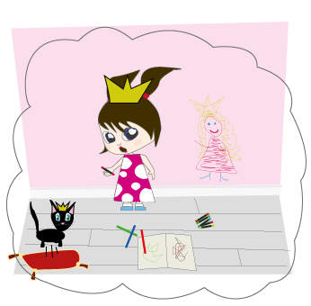

Emma ritar en jättefin prinsessa och när hon nästan är klar så säger det bara:
POFF!!!
När Emma kollar ner på sina kläder så har hon en jättefin prinsessklänning på sig. När hon känner ovanpå sitt huvud har hon en alldeles blänkande häftigt prinsesskrona.
Katten Kattis skriker till när han upptäcker att även han har förvandlats till en prinsessa.
– Åh vad häftigt! utbrister Emma glatt. Jag måste rita mer saker!!